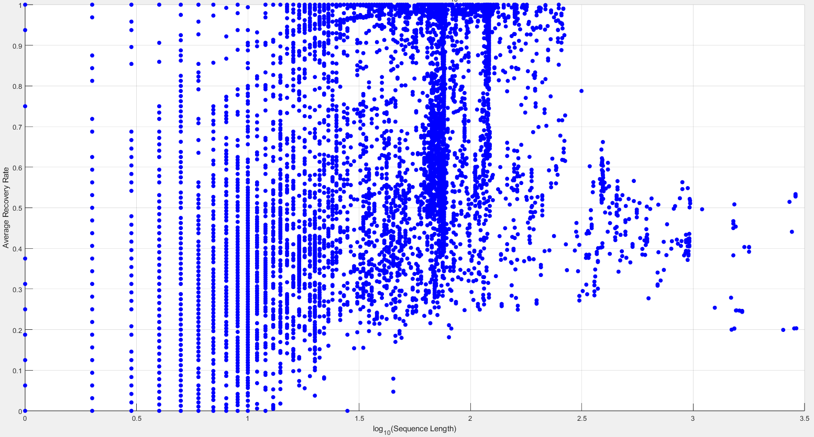
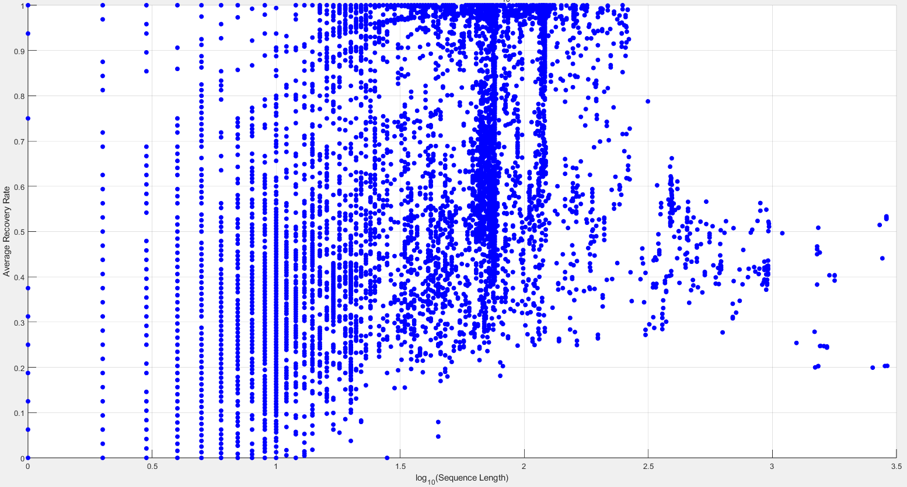

1
2
3
4
5
6
7
8
9
10
11
12
13
14
15
16
17
18
19
20
21
22
23
24
25
26
27
28
29
30
31
32
33
34
35
36
37
38
39
40
41
42
43
44
45
46
47
48
49
50
51
52
53
54
55
56
57
58
59
60
61
62
63
64
65
66
67
68
69
70
71
72
73
74
75
76
77
78
79
80
81
82
83
84
85
86
87
88
89
90
91
92
93
94
95
96
97
98
99
100
101
102
103
104
105
106
107
108
109
110
111
112
113
114
115
116
117
118
119
120
121
122
123
124
125
126
127
128
129
130
131
132
133
134
135
136
137
138
139
140
141
142
143
144
145
146
147
148
149
150
151
152
153
154
155
156
157
158
159
160
161
162
163
164
165
166
167
168
169
170
171
172
173
174
175
176
177
178
179
180
181
182
183
184
185
186
187
188
189
190
191
192
193
194
195
196
197
198
199
200
201
202
203
204
205
206
207
208
209
210
211
212
213
214
215
216
217
218
219
220
221
222
223
224
225
226
227
228
229
230
231
232
233
234
235
236
237
238
239
240
241
242
243
244
245
246
247
248
249
250
251
252
253
254
255
256
257
258
259
260
261
262
263
264
265
266
267
268
269
270
271
272
273
274
275
276
277
278
279
280
281
282
283
284
285
286
287
288
289
290
291
292
293
294
295
296
297
298
299
300
301
302
303
304
305
306
307
308
309
310
311
312
313
314
315
316
317
318
319
320
321
322
323
324
325
326
327
328
329
330
331
332
333
334
335
336
337
338
339
340
341
342
343
344
345
346
347
348
349
350
351
352
353
354
355
356
357
358
359
360
361
362
363
364
365
366
367
368
369
370
371
372
373
374
375
376
377
378
379
380
381
382
383
384
385
386
387
388
389
390
391
392
393
394
395
396
397
398
399
400
401
402
403
404
405
406
407
408
409
410
411
412
413
414
415
416
417
418
419
420
421
422
423
424
425
426
427
428
429
430
431
432
433
434
435
436
437
438
439
440
441
442
443
444
445
446
447
448
449
450
451
452
453
454
455
456
457
458
459
460
461
|
################################################################
# Generalisation of Geometric Vector Perceptron, Jing et al.
# for explicit multi-state biomolecule representation learning.
# Original repository: https://github.com/drorlab/gvp-pytorch
################################################################
from typing import Optional
import torch
from torch import nn
import torch.nn.functional as F
from torch.distributions import Categorical
import torch_geometric
from src.layers import *
class MultiScaleAttention(nn.Module):
'''
Multi-scale attention module to capture dependencies at different window sizes.
'''
def __init__(
self,
embed_dim: int,
num_heads: int = 8,
window_sizes: list = [10, 50, 200, None], # None for global scale
dropout: float = 0.1
):
super().__init__()
self.window_sizes = window_sizes
self.attentions = nn.ModuleList([
nn.MultiheadAttention(
embed_dim=embed_dim,
num_heads=num_heads,
dropout=dropout,
batch_first=True
) for _ in window_sizes
])
def forward(self, x, mask=None):
# x: (batch_size, seq_len, embed_dim)
outputs = []
seq_len = x.size(1)
for idx, (attn, window_size) in enumerate(zip(self.attentions, self.window_sizes)):
if window_size is None:
# Global attention
attn_output, _ = attn(x, x, x, attn_mask=mask)
else:
# Local window attention: create sliding window mask or approximate
# For simplicity, we can use full attention but in practice, implement windowing
# Here, as a placeholder, apply full attention per scale (can be optimized with sparse masks)
attn_output, _ = attn(x, x, x, attn_mask=mask)
outputs.append(attn_output)
# Fuse outputs: average across scales
fused_output = torch.mean(torch.stack(outputs), dim=0)
return fused_output
class AutoregressiveMultiGNNv1(torch.nn.Module):
'''
Autoregressive GVP-GNN for **multiple** structure-conditioned RNA design.
Takes in RNA structure graphs of type `torch_geometric.data.Data`
or `torch_geometric.data.Batch` and returns a categorical distribution
over 4 bases at each position in a `torch.Tensor` of shape [n_nodes, 4].
The standard forward pass requires sequence information as input
and should be used for training or evaluating likelihood.
For sampling or design, use `self.sample`.
Args:
node_in_dim (tuple): node dimensions in input graph
node_h_dim (tuple): node dimensions to use in GVP-GNN layers
node_in_dim (tuple): edge dimensions in input graph
edge_h_dim (tuple): edge dimensions to embed in GVP-GNN layers
num_layers (int): number of GVP-GNN layers in encoder/decoder
drop_rate (float): rate to use in all dropout layers
out_dim (int): output dimension (4 bases)
'''
def __init__(
self,
node_in_dim = (64, 4),
node_h_dim = (128, 16),
edge_in_dim = (32, 1),
edge_h_dim = (32, 1),
num_layers = 3,
drop_rate = 0.1,
out_dim = 4,
num_attention_heads = 8,
attention_window_sizes = [10, 50, 200, None], # Multi-scale windows
):
super().__init__()
self.node_in_dim = node_in_dim
self.node_h_dim = node_h_dim
self.edge_in_dim = edge_in_dim
self.edge_h_dim = edge_h_dim
self.num_layers = num_layers
self.out_dim = out_dim
activations = (F.silu, None)
# Node input embedding
self.W_v = torch.nn.Sequential(
LayerNorm(self.node_in_dim),
GVP(self.node_in_dim, self.node_h_dim,
activations=(None, None), vector_gate=True)
)
# Edge input embedding
self.W_e = torch.nn.Sequential(
LayerNorm(self.edge_in_dim),
GVP(self.edge_in_dim, self.edge_h_dim,
activations=(None, None), vector_gate=True)
)
# Encoder layers (supports multiple conformations)
self.encoder_layers = nn.ModuleList(
MultiGVPConvLayer(self.node_h_dim, self.edge_h_dim,
activations=activations, vector_gate=True,
drop_rate=drop_rate, norm_first=True)
for _ in range(num_layers))
# Multi-scale attention for capturing long-distance dependencies at different scales
self.multi_scale_attention = MultiScaleAttention(
embed_dim=self.node_h_dim[0], # Scalar dimension
num_heads=num_attention_heads,
window_sizes=attention_window_sizes,
dropout=drop_rate
)
# Decoder layers
self.W_s = nn.Embedding(self.out_dim, self.out_dim)
self.edge_h_dim = (self.edge_h_dim[0] + self.out_dim, self.edge_h_dim[1])
self.decoder_layers = nn.ModuleList(
GVPConvLayer(self.node_h_dim, self.edge_h_dim,
activations=activations, vector_gate=True,
drop_rate=drop_rate, autoregressive=True, norm_first=True)
for _ in range(num_layers))
# Output
self.W_out = GVP(self.node_h_dim, (self.out_dim, 0), activations=(None, None))
def forward(self, batch):
h_V = (batch.node_s, batch.node_v)
h_E = (batch.edge_s, batch.edge_v)
edge_index = batch.edge_index
seq = batch.seq
h_V = self.W_v(h_V) # (n_nodes, n_conf, d_s), (n_nodes, n_conf, d_v, 3)
h_E = self.W_e(h_E) # (n_edges, n_conf, d_se), (n_edges, n_conf, d_ve, 3)
for layer in self.encoder_layers:
h_V = layer(h_V, edge_index, h_E) # (n_nodes, n_conf, d_s), (n_nodes, n_conf, d_v, 3)
# Pool multi-conformation features:
# nodes: (n_nodes, d_s), (n_nodes, d_v, 3)
# edges: (n_edges, d_se), (n_edges, d_ve, 3)
h_V, h_E = self.pool_multi_conf(h_V, h_E, batch.mask_confs, edge_index)
# Apply multi-scale attention on pooled scalar features
h_V_s = h_V[0].unsqueeze(0) # (1, n_nodes, d_s)
attn_output = self.multi_scale_attention(h_V_s)
h_V = (attn_output.squeeze(0) + h_V[0], h_V[1]) # Residual connection
encoder_embeddings = h_V
h_S = self.W_s(seq)
h_S = h_S[edge_index[0]]
h_S[edge_index[0] >= edge_index[1]] = 0
h_E = (torch.cat([h_E[0], h_S], dim=-1), h_E[1])
for layer in self.decoder_layers:
h_V = layer(h_V, edge_index, h_E, autoregressive_x = encoder_embeddings)
logits = self.W_out(h_V)
return logits
@torch.no_grad()
def sample(
self,
batch,
n_samples,
temperature: Optional[float] = 0.1,
logit_bias: Optional[torch.Tensor] = None,
return_logits: Optional[bool] = False
):
'''
Samples sequences autoregressively from the distribution
learned by the model.
Args:
batch (torch_geometric.data.Data): mini-batch containing one
RNA backbone to design sequences for
n_samples (int): number of samples
temperature (float): temperature to use in softmax over
the categorical distribution
logit_bias (torch.Tensor): bias to add to logits during sampling
to manually fix or control nucleotides in designed sequences,
of shape [n_nodes, 4]
return_logits (bool): whether to return logits or not
Returns:
seq (torch.Tensor): int tensor of shape [n_samples, n_nodes]
based on the residue-to-int mapping of
the original training data
logits (torch.Tensor): logits of shape [n_samples, n_nodes, 4]
(only if return_logits is True)
'''
h_V = (batch.node_s, batch.node_v)
h_E = (batch.edge_s, batch.edge_v)
edge_index = batch.edge_index
device = edge_index.device
num_nodes = h_V[0].shape[0]
h_V = self.W_v(h_V) # (n_nodes, n_conf, d_s), (n_nodes, n_conf, d_v, 3)
h_E = self.W_e(h_E) # (n_edges, n_conf, d_se), (n_edges, n_conf, d_ve, 3)
for layer in self.encoder_layers:
h_V = layer(h_V, edge_index, h_E) # (n_nodes, n_conf, d_s), (n_nodes, n_conf, d_v, 3)
# Pool multi-conformation features
# nodes: (n_nodes, d_s), (n_nodes, d_v, 3)
# edges: (n_edges, d_se), (n_edges, d_ve, 3)
h_V, h_E = self.pool_multi_conf(h_V, h_E, batch.mask_confs, edge_index)
# Apply multi-scale attention on pooled scalar features
h_V_s = h_V[0].unsqueeze(0) # (1, n_nodes, d_s)
attn_output = self.multi_scale_attention(h_V_s)
h_V = (attn_output.squeeze(0) + h_V[0], h_V[1]) # Residual connection
# Repeat features for sampling n_samples times
h_V = (h_V[0].repeat(n_samples, 1),
h_V[1].repeat(n_samples, 1, 1))
h_E = (h_E[0].repeat(n_samples, 1),
h_E[1].repeat(n_samples, 1, 1))
# Expand edge index for autoregressive decoding
edge_index = edge_index.expand(n_samples, -1, -1)
offset = num_nodes * torch.arange(n_samples, device=device).view(-1, 1, 1)
edge_index = torch.cat(tuple(edge_index + offset), dim=-1)
# This is akin to 'batching' (in PyG style) n_samples copies of the graph
seq = torch.zeros(n_samples * num_nodes, device=device, dtype=torch.int)
h_S = torch.zeros(n_samples * num_nodes, self.out_dim, device=device)
logits = torch.zeros(n_samples * num_nodes, self.out_dim, device=device)
h_V_cache = [(h_V[0].clone(), h_V[1].clone()) for _ in self.decoder_layers]
# Decode one token at a time
for i in range(num_nodes):
h_S_ = h_S[edge_index[0]]
h_S_[edge_index[0] >= edge_index[1]] = 0
h_E_ = (torch.cat([h_E[0], h_S_], dim=-1), h_E[1])
edge_mask = edge_index[1] % num_nodes == i # True for all edges where dst is node i
edge_index_ = edge_index[:, edge_mask] # subset all incoming edges to node i
h_E_ = tuple_index(h_E_, edge_mask)
node_mask = torch.zeros(n_samples * num_nodes, device=device, dtype=torch.bool)
node_mask[i::num_nodes] = True # True for all nodes i and its repeats
for j, layer in enumerate(self.decoder_layers):
out = layer(h_V_cache[j], edge_index_, h_E_,
autoregressive_x=h_V_cache[0], node_mask=node_mask)
out = tuple_index(out, node_mask) # subset out to only node i and its repeats
if j < len(self.decoder_layers)-1:
h_V_cache[j+1][0][i::num_nodes] = out[0]
h_V_cache[j+1][1][i::num_nodes] = out[1]
lgts = self.W_out(out)
# Add logit bias if provided to fix or bias positions
if logit_bias is not None:
lgts += logit_bias[i]
# Sample from logits
seq[i::num_nodes] = Categorical(logits=lgts / temperature).sample()
h_S[i::num_nodes] = self.W_s(seq[i::num_nodes])
logits[i::num_nodes] = lgts
if return_logits:
return seq.view(n_samples, num_nodes), logits.view(n_samples, num_nodes, self.out_dim)
else:
return seq.view(n_samples, num_nodes)
def pool_multi_conf(self, h_V, h_E, mask_confs, edge_index):
if mask_confs.size(1) == 1:
# Number of conformations is 1, no need to pool
return (h_V[0][:, 0], h_V[1][:, 0]), (h_E[0][:, 0], h_E[1][:, 0])
# True num_conf for masked mean pooling
n_conf_true = mask_confs.sum(1, keepdim=True) # (n_nodes, 1)
# Mask scalar features
mask = mask_confs.unsqueeze(2) # (n_nodes, n_conf, 1)
h_V0 = h_V[0] * mask
h_E0 = h_E[0] * mask[edge_index[0]]
# Mask vector features
mask = mask.unsqueeze(3) # (n_nodes, n_conf, 1, 1)
h_V1 = h_V[1] * mask
h_E1 = h_E[1] * mask[edge_index[0]]
# Average pooling multi-conformation features
h_V = (h_V0.sum(dim=1) / n_conf_true, # (n_nodes, d_s)
h_V1.sum(dim=1) / n_conf_true.unsqueeze(2)) # (n_nodes, d_v, 3)
h_E = (h_E0.sum(dim=1) / n_conf_true[edge_index[0]], # (n_edges, d_se)
h_E1.sum(dim=1) / n_conf_true[edge_index[0]].unsqueeze(2)) # (n_edges, d_ve, 3)
return h_V, h_E
class NonAutoregressiveMultiGNNv1(torch.nn.Module):
'''
Non-Autoregressive GVP-GNN for **multiple** structure-conditioned RNA design.
Takes in RNA structure graphs of type `torch_geometric.data.Data`
or `torch_geometric.data.Batch` and returns a categorical distribution
over 4 bases at each position in a `torch.Tensor` of shape [n_nodes, 4].
The standard forward pass requires sequence information as input
and should be used for training or evaluating likelihood.
For sampling or design, use `self.sample`.
Args:
node_in_dim (tuple): node dimensions in input graph
node_h_dim (tuple): node dimensions to use in GVP-GNN layers
node_in_dim (tuple): edge dimensions in input graph
edge_h_dim (tuple): edge dimensions to embed in GVP-GNN layers
num_layers (int): number of GVP-GNN layers in encoder/decoder
drop_rate (float): rate to use in all dropout layers
out_dim (int): output dimension (4 bases)
'''
def __init__(
self,
node_in_dim = (64, 4),
node_h_dim = (128, 16),
edge_in_dim = (32, 1),
edge_h_dim = (32, 1),
num_layers = 3,
drop_rate = 0.1,
out_dim = 4,
):
super().__init__()
self.node_in_dim = node_in_dim
self.node_h_dim = node_h_dim
self.edge_in_dim = edge_in_dim
self.edge_h_dim = edge_h_dim
self.num_layers = num_layers
self.out_dim = out_dim
activations = (F.silu, None)
# Node input embedding
self.W_v = torch.nn.Sequential(
LayerNorm(self.node_in_dim),
GVP(self.node_in_dim, self.node_h_dim,
activations=(None, None), vector_gate=True)
)
# Edge input embedding
self.W_e = torch.nn.Sequential(
LayerNorm(self.edge_in_dim),
GVP(self.edge_in_dim, self.edge_h_dim,
activations=(None, None), vector_gate=True)
)
# Encoder layers (supports multiple conformations)
self.encoder_layers = nn.ModuleList(
MultiGVPConvLayer(self.node_h_dim, self.edge_h_dim,
activations=activations, vector_gate=True,
drop_rate=drop_rate, norm_first=True)
for _ in range(num_layers))
# Output
self.W_out = torch.nn.Sequential(
LayerNorm(self.node_h_dim),
GVP(self.node_h_dim, self.node_h_dim,
activations=(None, None), vector_gate=True),
GVP(self.node_h_dim, (self.out_dim, 0),
activations=(None, None))
)
def forward(self, batch):
h_V = (batch.node_s, batch.node_v)
h_E = (batch.edge_s, batch.edge_v)
edge_index = batch.edge_index
h_V = self.W_v(h_V) # (n_nodes, n_conf, d_s), (n_nodes, n_conf, d_v, 3)
h_E = self.W_e(h_E) # (n_edges, n_conf, d_se), (n_edges, n_conf, d_ve, 3)
for layer in self.encoder_layers:
h_V = layer(h_V, edge_index, h_E) # (n_nodes, n_conf, d_s), (n_nodes, n_conf, d_v, 3)
# Pool multi-conformation features:
# nodes: (n_nodes, d_s), (n_nodes, d_v, 3)
# edges: (n_edges, d_se), (n_edges, d_ve, 3)
# h_V, h_E = self.pool_multi_conf(h_V, h_E, batch.mask_confs, edge_index)
h_V = (h_V[0].mean(dim=1), h_V[1].mean(dim=1))
logits = self.W_out(h_V) # (n_nodes, out_dim)
return logits
def sample(self, batch, n_samples, temperature=0.1, return_logits=False):
with torch.no_grad():
h_V = (batch.node_s, batch.node_v)
h_E = (batch.edge_s, batch.edge_v)
edge_index = batch.edge_index
h_V = self.W_v(h_V) # (n_nodes, n_conf, d_s), (n_nodes, n_conf, d_v, 3)
h_E = self.W_e(h_E) # (n_edges, n_conf, d_se), (n_edges, n_conf, d_ve, 3)
for layer in self.encoder_layers:
h_V = layer(h_V, edge_index, h_E) # (n_nodes, n_conf, d_s), (n_nodes, n_conf, d_v, 3)
# Pool multi-conformation features
# h_V, h_E = self.pool_multi_conf(h_V, h_E, batch.mask_confs, edge_index)
h_V = (h_V[0].mean(dim=1), h_V[1].mean(dim=1))
logits = self.W_out(h_V) # (n_nodes, out_dim)
probs = F.softmax(logits / temperature, dim=-1)
seq = torch.multinomial(probs, n_samples, replacement=True) # (n_nodes, n_samples)
if return_logits:
return seq.permute(1, 0).contiguous(), logits.unsqueeze(0).repeat(n_samples, 1, 1)
else:
return seq.permute(1, 0).contiguous()
def pool_multi_conf(self, h_V, h_E, mask_confs, edge_index):
if mask_confs.size(1) == 1:
# Number of conformations is 1, no need to pool
return (h_V[0][:, 0], h_V[1][:, 0]), (h_E[0][:, 0], h_E[1][:, 0])
# True num_conf for masked mean pooling
n_conf_true = mask_confs.sum(1, keepdim=True) # (n_nodes, 1)
# Mask scalar features
mask = mask_confs.unsqueeze(2) # (n_nodes, n_conf, 1)
h_V0 = h_V[0] * mask
h_E0 = h_E[0] * mask[edge_index[0]]
# Mask vector features
mask = mask.unsqueeze(3) # (n_nodes, n_conf, 1, 1)
h_V1 = h_V[1] * mask
h_E1 = h_E[1] * mask[edge_index[0]]
# Average pooling multi-conformation features
h_V = (h_V0.sum(dim=1) / n_conf_true, # (n_nodes, d_s)
h_V1.sum(dim=1) / n_conf_true.unsqueeze(2)) # (n_nodes, d_v, 3)
h_E = (h_E0.sum(dim=1) / n_conf_true[edge_index[0]], # (n_edges, d_se)
h_E1.sum(dim=1) / n_conf_true[edge_index[0]].unsqueeze(2)) # (n_edges, d_ve, 3)
return h_V, h_E
|


 
